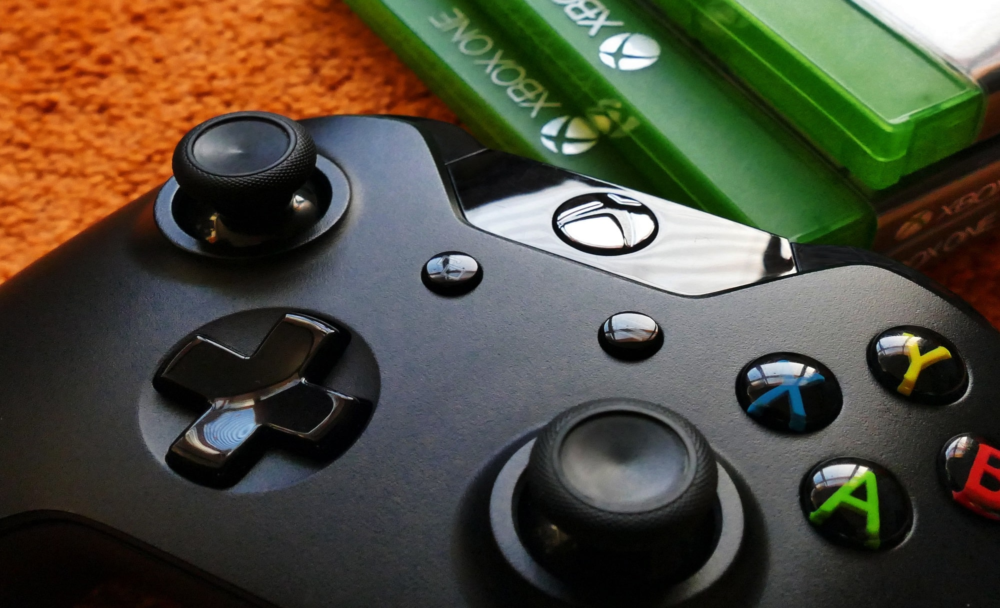
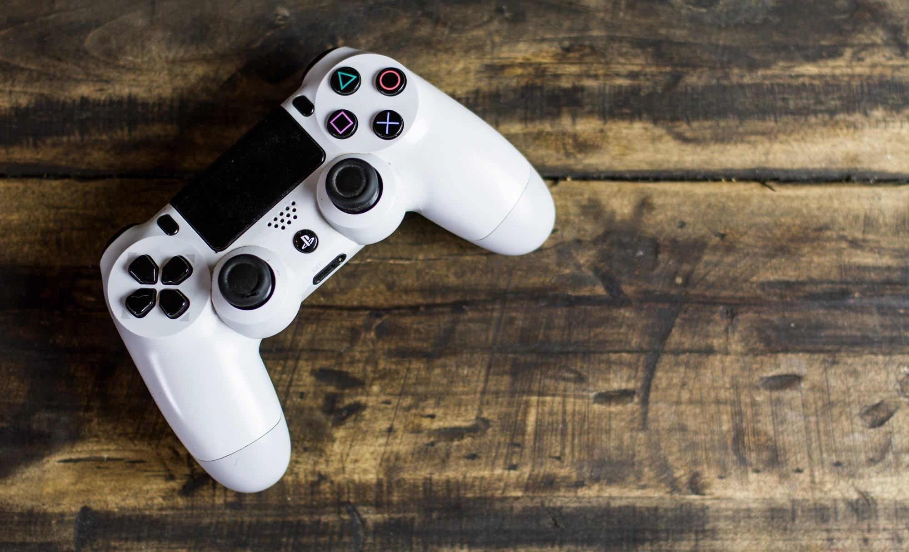

Nintendo Switch es la consola de Nintendo

Nintendo Switch (ニンテンドー スイッチ Nintendō Suitchi) es la novena consola de videojuegos principal
desarrollada por
Nintendo. Conocida en el desarrollo por su nombre código «NX», se dio a conocer en octubre de 2016 y
fue
lanzada
mundialmente el 3 de marzo de 2017.
Nintendo considera a Switch una consola híbrida. Se puede utilizar como
consola de
sobremesa con la unidad
principal insertada en una estación de acoplamiento para conectarla con un televisor.
Alternativamente,
puede
ser extraída de la base y utilizada de forma similar a una tableta a través de su
pantalla táctil LCD, o colocada sobre una superficie gracias a su soporte plástico integrado siendo
así
visible
por varios jugadores.
La Switch utiliza dos controladores inalámbricos llamados en conjunto Joy-Con
,
que incluyen cuatro botones de
acción estándar y un joystick direccional, así como sensores para la detección de movimiento y
retroalimentación
táctil de alta definición, aunque se diferencian en algunos botones y características adicionales.
Dos
Joy-Con pueden
conectarse uno a cada lado de la consola para usarse como consola portátil, conectarse al accesorio
Grip
proporcionado junto a la consola para usarlos como un mando más tradicional, o ser utilizados
individualmente en
la mano como el mando Wii, y de esta forma usarse con juegos multijugador locales. También puede
utilizar
ciertos controles inalámbricos y/o alámbricos que no incluye la consola, adoptado como Pro
Controller, que
incluyen las
mismas características que los mandos tradicionales a excepción de que este incluye detección NFC
para
Amiibo y
vibración HD.
Los juegos para esta consola y otras aplicaciones están disponibles como
cartuchos
físicos ROM de flash y como
distribución digital, y no utilizan bloqueo de región. La Switch compite en el mercado de las
videoconsolas
con
sus contemporáneas PlayStation 5 de Sony y Xbox Series X|S de Microsoft pese a que estas dos
compiten entre
sí.
El concepto de la Switch surgió como reacción de Nintendo a varios trimestres de pérdidas financieras
en
2014,
atribuidas a las malas ventas de su consola anterior, la Wii U, así como una mayor competencia en el
mercado
de
los juegos para dispositivos móviles. Posteriormente, el presidente de Nintendo, Satoru Iwata,
incitó a la
compañía en la dirección de los juegos móviles y la creación de un hardware totalmente
nuevo.
Xbox Series X/S es la nueva linea de consolas de Microsoft

Xbox, en sus versiones Series X y Series S, es una línea de videoconsolas de sobremesa desarrolladas por Microsoft y la
cuarta generación de la familia de consolas Xbox. La familia de consolas, conocida colectivamente como "Project
Scarlett" y revelada por primera vez en el E3 2019, incluye la Xbox Series X de gama alta, revelada en The Game Awards
2019 y cuyo nombre en código es "Project Anaconda", y la Xbox Series S de menor costo, anunciada en septiembre de 2020 y
cuyo nombre en código es "Project Lockhart". Ambas consolas se lanzaron el 10 de noviembre de 2020
Ambas consolas suceden a la línea actual de Xbox One, reemplazando a los modelos insignia Xbox One X y Xbox One S de
menor costo, respectivamente. Microsoft está priorizando el rendimiento del hardware, incluida la compatibilidad con
resoluciones de pantalla más altas (resolución de hasta 8K) y velocidades de cuadro, trazado de rayos en tiempo real y
uso de unidades de estado sólido de alta velocidad para reducir los tiempos de carga en la Xbox Series X. Xbox Series S
usa la misma CPU, pero tiene una GPU, memoria y almacenamiento interno reducidos, también carece de unidad óptica.
Microsoft está promoviendo un enfoque centrado en el jugador para su nuevo hardware, que incluye actualizaciones
gratuitas de versiones mejoradas de los juegos de Xbox One a través de su iniciativa "Smart Delivery", juegos
optimizados para el hardware de la Series X y compatibilidad con versiones anteriores de juegos, controladores y
accesorios de Xbox. La consola aprovecha su servicio de suscripción de juegos Xbox Game Pass, así como los juegos
remotos en la nube en dispositivos móviles a través de su plataforma de juegos en la nube xCloud. Asimismo, Microsoft
registró recientemente una nueva variante de la consola, llamada "XS", que está por definirse algunos detalles de la
misma
Play Station 5 la última generacion de Sony

PlayStation 5 (プレイステーション 5 Pureisutēshon Faibu, abreviada como PS5) es una consola de videojuegos de sobremesa
desarrollada por la empresa Sony Interactive Entertainment. Fue anunciada en el año 2019 como la sucesora de la
PlayStation 4, la PS5 se lanzó el 12 de noviembre de 2020 en Australia, Japón, Nueva Zelanda, América del Norte,
Singapur y Corea del Sur, y en el resto de países el 19 de noviembre de 2020. La PlayStation 5 junto con las consolas
Xbox Series X y Series S de Microsoft, lanzadas el mismo mes, son parte de la novena generación de consolas de
videojuegos.
La plataforma se lanzó en dos variantes: un modelo base con una unidad de disco óptico compatible con Ultra HD Blu-ray y
una edición digital que carece de esta unidad, que sirve como modelo de menor costo para quienes prefieren comprar
videojuegos mediante descarga digital.
Las principales características de hardware de la PlayStation 5 incluyen una unidad de estado sólido personalizada para
transmisión de datos de alta velocidad para permitir mejoras significativas en el rendimiento del almacenamiento, una
GPU AMD capaz de mostrar una resolución de 4K de hasta 120 cuadros por segundo, trazado de rayos acelerado por hardware
para realismo, iluminación y reflejos y el motor Tempest que permite efectos de audio 3D acelerados por hardware. Otras
características incluyen el controlador DualSense con retroalimentación háptica y compatibilidad con versiones
anteriores de la mayoría de los videojuegos de PlayStation 4 y PlayStation VR.